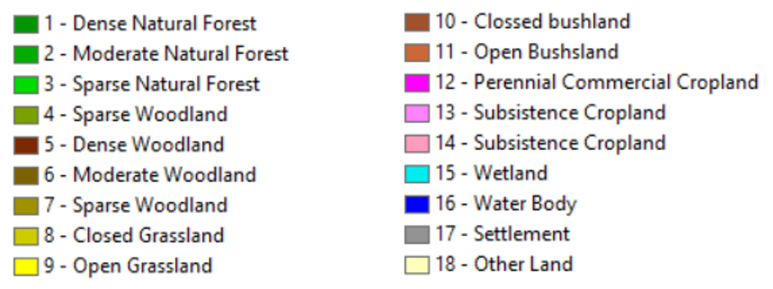

Utiliser des données de couverture terrestre personnalisées¶
Objectif: Apprenez à charger des données de couverture terrestre personnalisées et à calculer le sous-indicateur de changement de couverture terrestre à l’aide de Trends.Earth.
Heure estimée d’achèvement: 40 minutes
Accès Internet: Non requis
Note
Les données sur la couverture terrestre de ce didacticiel ont été fournies par le Centre régional de cartographie des ressources pour le développement. <http://geoportal.rcmrd.org/layers/servir%3Auganda_landcover_2014_scheme_i> _ et peut être téléchargé à partir de ce lien <https://s3.amazonaws.com/trends.earth/sharing/RCMRD_Uganda_Land_Cover.zip> `_.
Pour charger les données de couverture terrestre personnalisées, cliquez sur l’icône (
 ) dans la barre d’outils de Trends.Earth.
) dans la barre d’outils de Trends.Earth.

Le menu Charger les données s’ouvre. Sélectionnez Couverture terrestre dans la section Importer un ensemble de données d’entrée personnalisé.
Dans le jeu de données Charger une couverture de sol personnalisée, utilisez le bouton radio pour sélectionner le format du fichier d’entrée (raster ou vecteur). Pour ce didacticiel, sélectionnez raster, mais vous pouvez l’exécuter avec vos données vectorielles de couverture terrestre si vous préférez. Cliquez sur Parcourir pour accéder au fichier de couverture terrestre que vous souhaitez importer.

Utilisez la fenêtre Select input file pour accéder au fichier à importer, sélectionnez-le et cliquez sur Open.

De retour à la fenêtre Charger un ensemble de données de couverture personnalisée, vous avez des options pour sélectionner le numéro de bande dans lequel les données de productivité sont stockées, au cas où votre fichier d’entrée est un raster multi-bande. Vous avez également la possibilité de modifier la résolution du fichier. Nous vous recommandons de les laisser comme paramètres par défaut sauf si vous avez des raisons valables de les changer.
Définissez l’année de référence pour les données. Dans ce cas, puisque l’ensemble de données sur la couverture terrestre pour l’Ouganda a été développé pour l’année 2000, définissez-le comme tel. Assurez-vous d’attribuer l’année correcte.
Cliquez sur Parcourir en bas de la fenêtre pour sélectionner le fichier raster en sortie.

Cliquez sur le bouton Modifier la définition, cela ouvrira le menu Agrégat d’installation du menu des données de la couverture terrestre. Ici, vous devez affecter chacune des valeurs d’entrée d’origine de votre jeu de données à l’une des 7 classes de couverture terrestre recommandées par la CCD.

Pour cet exemple, l’ensemble de données sur l’Ouganda comprend 18 classes de couverture terrestre:
- À partir des métadonnées de l’ensemble de données sur la couverture terrestre, nous savons que la meilleure approche d’agrégation est la suivante:
Aucune donnée = 0
Arbre couvert = 1 à 7
Prairie = 8 à 11
Terres cultivées = 12 à 14
Terre humide = 15
Corps d’eau = 16
Artificiel = 17
Autre terre = 18
Utilisez le menu Agrégat de configuration du menu des données de couverture terrestre pour attribuer à chaque numéro de la Classe d’entrée la classe de sortie correspondante.
Lorsque vous avez terminé, cliquez sur Enregistrer le fichier de définition. Cette option vous fera gagner du temps la prochaine fois que vous lancerez l’outil, en chargeant simplement le fichier de définition précédemment enregistré.
Cliquez sur Enregistrer pour continuer

De retour à la fenêtre Charger un ensemble de données de couverture de terrain personnalisé, cliquez sur Parcourir en bas de la fenêtre pour sélectionner le Fichier raster en sortie.
Accédez au dossier dans lequel vous souhaitez enregistrer le fichier. Attribuez-lui un nom et cliquez sur Enregistrer.
De retour au Charger un ensemble de données Custom Land Cover, cliquez sur OK pour que l’outil s’exécute.
Une barre de progression apparaîtra montrant le pourcentage de la tâche terminée.

Lorsque le traitement est terminé, l’ensemble de données du couvert terrestre importé est chargé dans QGIS.
Note
Vous avez des données personnalisées sur la couverture terrestre importées pour une année (2000), mais deux sont nécessaires pour effectuer l’analyse du changement de couverture terrestre. Répétez maintenant les étapes 1 à 11, mais cette fois avec la carte de couverture terrestre la plus récente. Pour ce tutoriel, nous allons utiliser une autre carte de la couverture terrestre de l’Ouganda à partir de l’année 2015. Assurez-vous de changer la date de l’année dans le menu d’importation.
Une fois que vous avez importé les cartes de la couverture terrestre pour les années 2000 et 2015, vous devez les charger toutes deux dans QGIS.

Maintenant que les deux jeux de données sur la couverture terrestre ont été importés dans Trends.Earth, l’outil d’analyse du changement de la couverture terrestre doit être exécuté. Recherchez la barre d’outils Trends.Earth dans QGIS, puis cliquez sur l’icône Calculer (
 ).
).

Le menu Calculate Indicators s’ouvre. Dans cette fenêtre, cliquez sur le bouton Land cover situé sous Step 1 - Option 2.
La fenêtre Calculer la couverture du sol s’ouvrira. Dans l’onglet Configuration, cliquez sur Ensemble de données sur la couverture terrestre personnalisée. Utilisez l’option déroulante à côté de Couche initiale (année initiale) et Couche finale (année cible) pour modifier les dates en conséquence. Lorsque vous avez terminé, cliquez sur Suivant.
L’onglet Définir la dégradation vous permet de définir la signification de chaque transition de couverture terrestre en termes de dégradation. Les transitions indiquées en rouge (signe moins) seront identifiées comme dégradation dans la sortie finale, les transitions en beige (zéro) seront identifiées comme stables et les transitions en vert (signe plus) seront identifiées comme des améliorations.
Par exemple, par défaut, on considère qu’un pixel qui a changé de Prairie à Arbre couvert sera considéré comme amélioré. Cependant, si dans votre zone d’étude l’empiètement des plantes ligneuses est un processus de dégradation, cette transition devrait être changée pour cette zone d’étude particulière en dégradation (signe moins).
Si vous n’avez apporté aucune modification à la matrice par défaut, cliquez simplement sur Suivant.
Si vous avez modifié la signification de certaines transitions, cliquez sur Enregistrer la table dans le fichier… pour enregistrer la définition pour une utilisation ultérieure. Puis cliquez sur Suivant.

Dans l’onglet Zone, définissez la zone d’analyse. Il y a deux options:
Utiliser les limites de pays et d’état fournies: Si vous souhaitez utiliser cette option, assurez-vous que l’option Zone administrative est sélectionnée, puis sélectionnez Premier niveau (pays) ou Deuxième niveau (état ou province selon le pays).
Note
Les Natural Earth Administrative Boundaries fournies dans Trends.Earth sont dans le public domain. Les limites et les noms utilisés, ainsi que les désignations utilisées, dans Trends.Earth n’impliquent pas l’approbation officielle ou l’acceptation par Conservation International Foundation, ou par ses organisations partenaires et contributeurs.
Si vous utilisez Trends.Earth à des fins officielles, il est recommandé de choisir une frontière officielle fournie par le bureau désigné de votre pays.
Utilisez votre propre fichier de zone: Si vous souhaitez utiliser votre propre zone d’analyse, assurez-vous que l’option Area from file est en surbrillance. Cliquez ensuite sur Parcourir et naviguez jusqu’au dossier de votre ordinateur où vous avez stocké le fichier.
Lorsque vous avez sélectionné la zone pour laquelle vous souhaitez calculer les indicateurs, cliquez sur Suivant.
Dans l’onglet Options, vous pouvez définir le nom de la tâche et créer Notes pour identifier l’analyse que vous exécutez. Quelle information à indiquer est facultative, mais nous suggérons de noter:
Domaine d’analyse
Rendez-vous
Les indicateurs fonctionnent

Lorsque vous cliquez sur ** Calculer **, le ** Choisissez un nom pour le fichier de sortie ** s'ouvrira. Sélectionnez l'emplacement où vous souhaitez enregistrer le fichier et son nom, puis cliquez sur ** Enregistrer **.
Une barre de progression apparaîtra montrant le pourcentage de la tâche terminée.
Lorsque le traitement est terminé, l’ensemble de données du sous-indicateur de dégradation du couvert végétal importé est chargé dans QGIS.
Note
Reportez-vous au tutoriel Calculer l’indicateur SDG pour obtenir des instructions sur la façon d’utiliser le sous-indicateur de la couverture terrestre pour calculer l’ODD final 15.3.1 après intégration avec les changements de la productivité des terres et du carbone organique du sol.